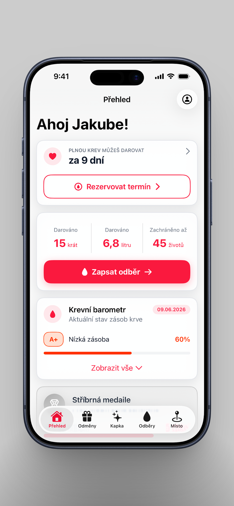
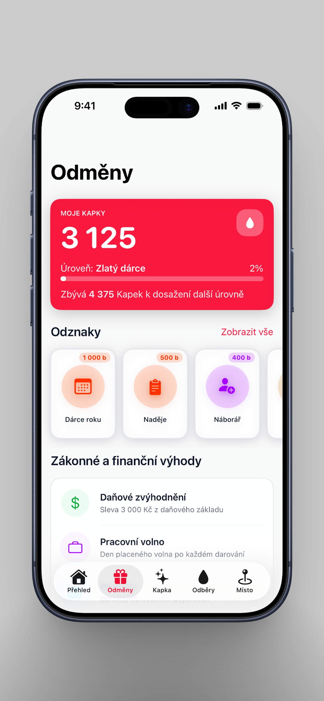
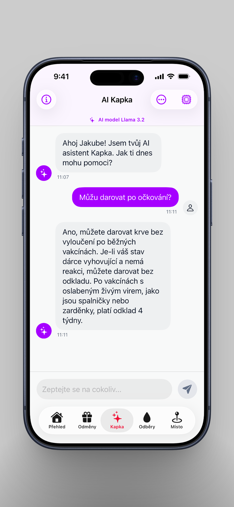
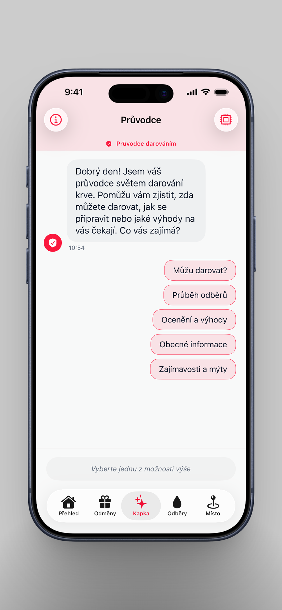
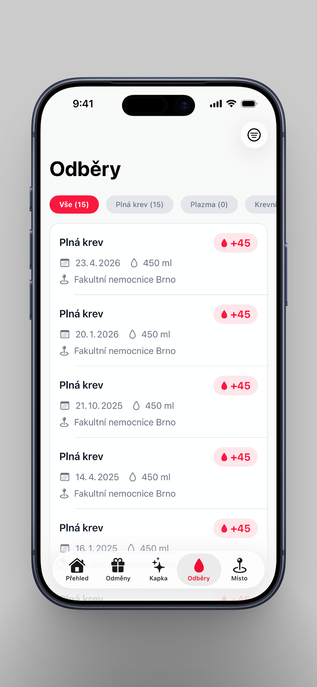
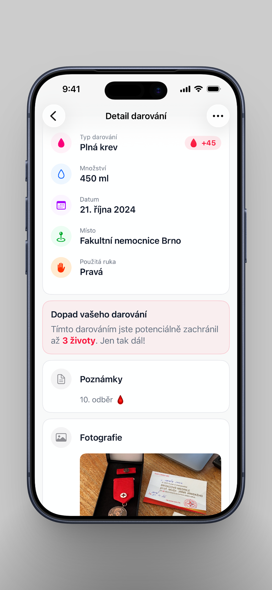
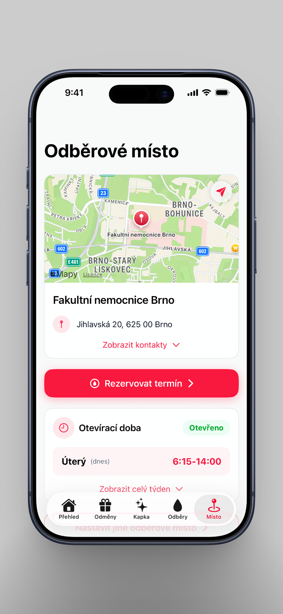

Daruj je komplexní mobilní aplikace navržená pro všechny dárce krve a krevních složek v České republice. Aplikace vám pomůže udržet si přehled o vašich odběrech, motivuje vás k dalším darováním a díky pokročilým technologiím vám poskytne odpovědi na jakékoli dotazy přímo ve vašem iPhonu.
Hlavní funkce
- Přehled odběrů: Mějte vždy po ruce záznamy o všech svých darováních, dostávejte upozornění, kdy můžete opět darovat, sledujte své statistiky a pokrok k oceněním Českého červeného kříže.
- Gamifikace a odměny: Sbírejte kapky a získávejte odznaky za jednotlivé odběry. Mějte pod kontrolou benefity, které vám jako dárcům náleží.
- AI asistent "Kapka": První asistent pro dárce, který běží lokálně ve vašem zařízení. Odpoví okamžitě, bez internetu a v naprostém soukromí. (pozn. asistent je dostupný pouze na zařízeních s min. 6 GB RAM)
- Průvodce darováním: Alternativou k AI asistentovi je statický průvodce s ověřenou znalostní bází, který díky rozsáhlým předdefinovaným otázkám odpoví vždy správně.
- Vaše odběrové místo: Aplikace vám zobrazí všechny potřebné informace o vašem zvoleném odběrovém místě včetně kontaktů, rezervačního systému a časů odběrů.
- Zdravotní způsobilost: Díky integraci s aplikací Zdraví vám Daruj na základě vašich zdravotních dat pomůže analyzovat, zda je vaše tělo na odběr připravené.
- Krevní barometry: Sledujte aktuální stavy zásob krve ve vaší nemocnici.
- 100% Soukromí: Žádná data neodcházejí na cizí servery. Vše je šifrováno v zabezpečeném úložišti vašich zařízení.
- Dotazník způsobilosti: Vyplňte si orientační dotazník způsobilosti k darování přímo v aplikaci.
Galerie







Pro koho je aplikace určena?
Daruj je tu jak pro prvodárce, kteří chtějí mít jistotu, že jsou na svůj první odběr připraveni, tak pro zkušené dárce, kteří si chtějí vést přehlednou historii a mít po ruce všechny důležité informace.
Stáhněte si Daruj a přidejte se ke komunitě, která zachraňuje životy.